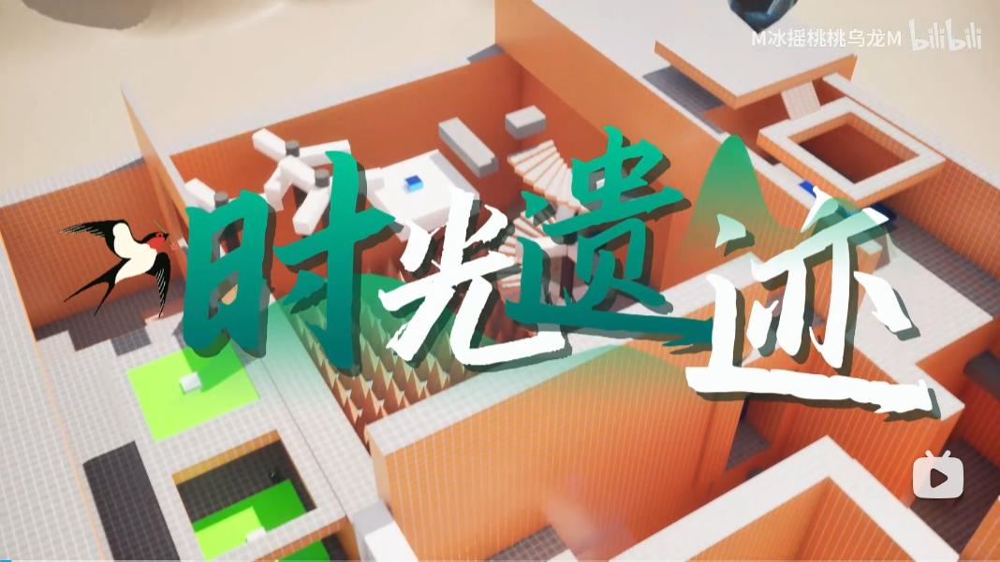
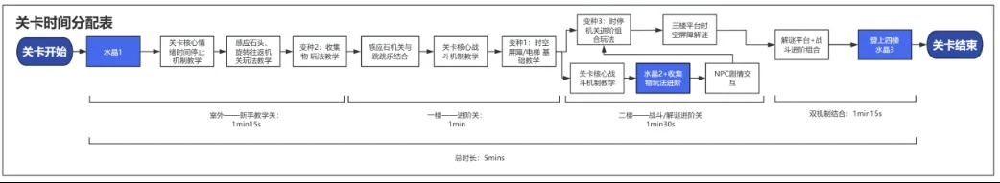
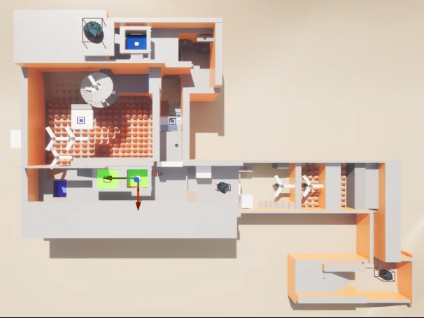
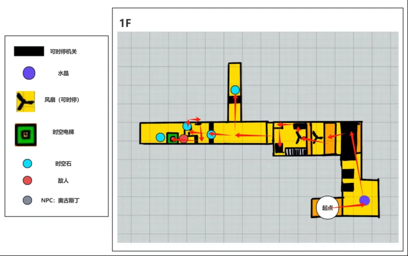
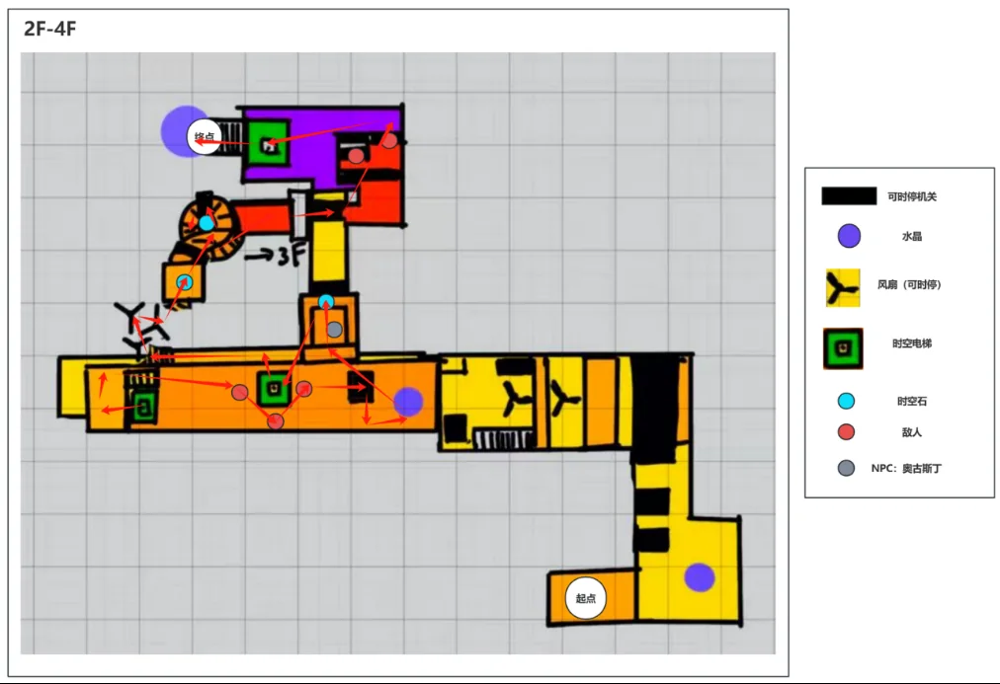

时停机关
冻结旋转或往返平台，制造安全窗口；玩家先观察运动规律，再决定时停时机与通过路线。

玩家以点亮时空水晶为目标，在清晰方向感下学习并组合核心能力。设计重点不是单点机关，而是把探索收集、平台解谜与战斗压力组织成有呼吸感的连续体验。
冻结旋转或往返平台，制造安全窗口；玩家先观察运动规律，再决定时停时机与通过路线。
把时停从移动平台延伸到战斗语境，用于控制威胁、创造近战输出窗口。
通过高低差、落点预览与空间地标降低迷失感，使操作挑战建立在明确意图之上。


用结构、视线与地标保证玩家能读懂下一步，而非依赖强制UI箭头。
先单独教学，再改变条件，最后与战斗叠加，避免一次性倾倒全部规则。
挑战后安排探索与奖励，让玩家消化新规则并准备进入下一轮压力。
点亮第一颗时空水晶后解锁时停。按键5发射时光能量弹：机关冻结7秒，再次命中重置倒计时；敌人冻结7秒并受到20点伤害，同一时间只能冻结一名敌人。
玩家观察轴向运动和旋转轨迹，通过时停主动创造落脚点。
踩踏对应机关使感应石升起，再冻结石体，把两步操作组合为连续跳跃。
互动机关附近藏有时空石；收集达到要求后解除屏障、开放电梯与下一层。
基础战斗、时停机关和视觉引导，让玩家形成“瞄准—冻结—行动”的操作模型。
把独立机关组合成连续窗口，要求玩家在有限时间内规划下一次时停。
加入机关联动与更高垂直复杂度，同时利用POI保持方向感。
用掩体、远近敌人与时停控制交替组织战斗和解谜压力。

